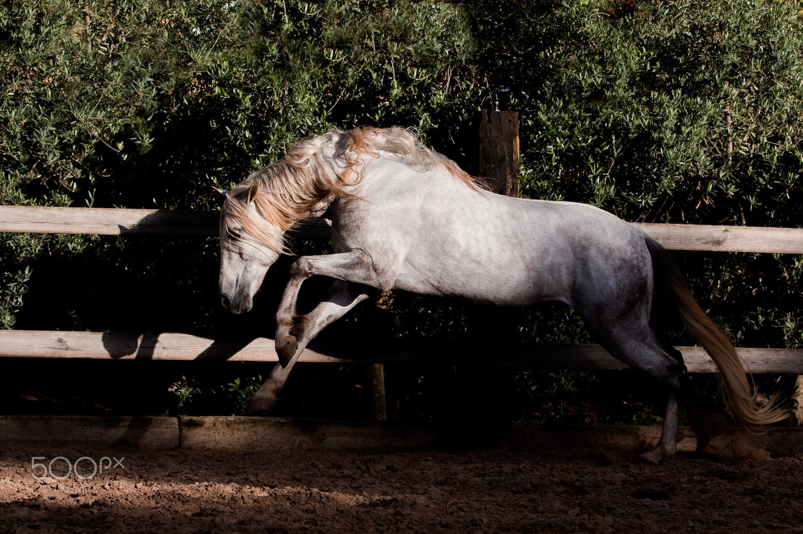

Välkommen till PURA RAZA ESPAÑOLA
Lär dig om den spanska hästrasen PRE, som är känd för sin elegans, intelligens och långa historia. Här får du lära dig mer om rasens ursprung, dess egenskaper och några av de hästar som gjort avtryck inom ridsporten.
PRE-hästen i bilder

PRE-hästens vackra profil
UTFORSKA MER
Upptäck PRE-hästens värld
Från Spaniens kungliga hov till den internationella dressyrarenan.
Bildkällor
Huvudbild: Susanne Neudecker. Wikimedia Commons . Licens: CC BY 3.0 .
Bildspel 1: Yeguada Alboran. Wikimedia Commons . Licens: CC BY 4.0 .
Bildspel 2: Yeguada Algaida. Flickr . Licens: CC0 (Public Domain Dedication).
Bildspel 3: Eget fotografi. Foto: Agnes Karlberg.